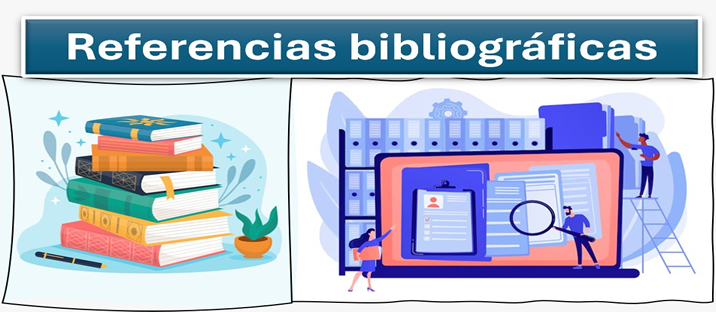

Deben existir datos específicos como son, autor, año, título, dirección electrónica, para que con ello se tenga veracidad de esta ya que esto ayuda a establecer que la información es original, derivado de tener bases teóricas que sustenten dicha información, además de tener un carácter científico que la avale.
Derivado de la importancia servira para establecer de donde se obtuvo la información, esto dará la certeza de que la información es verídica y sustentable para la investigación.
Con ello evitas el plagio de la información ya que las ideas, frases son importantes de quien las genera, es por ello que debes de tener las citas correspondientes de la investigación.
Figura 2.9
Referencias bibliográficas

Nota. Elaboración propia basada en Fundamentos de investigación. McGraw-Hill (2018). Hernández Sampieri, R.